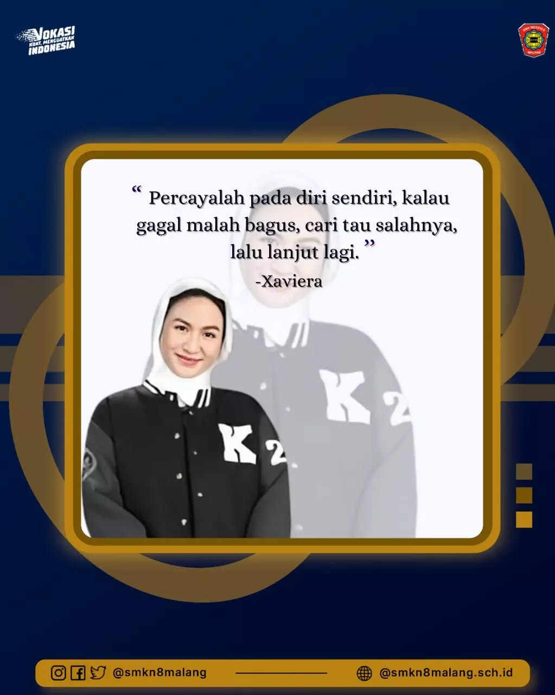
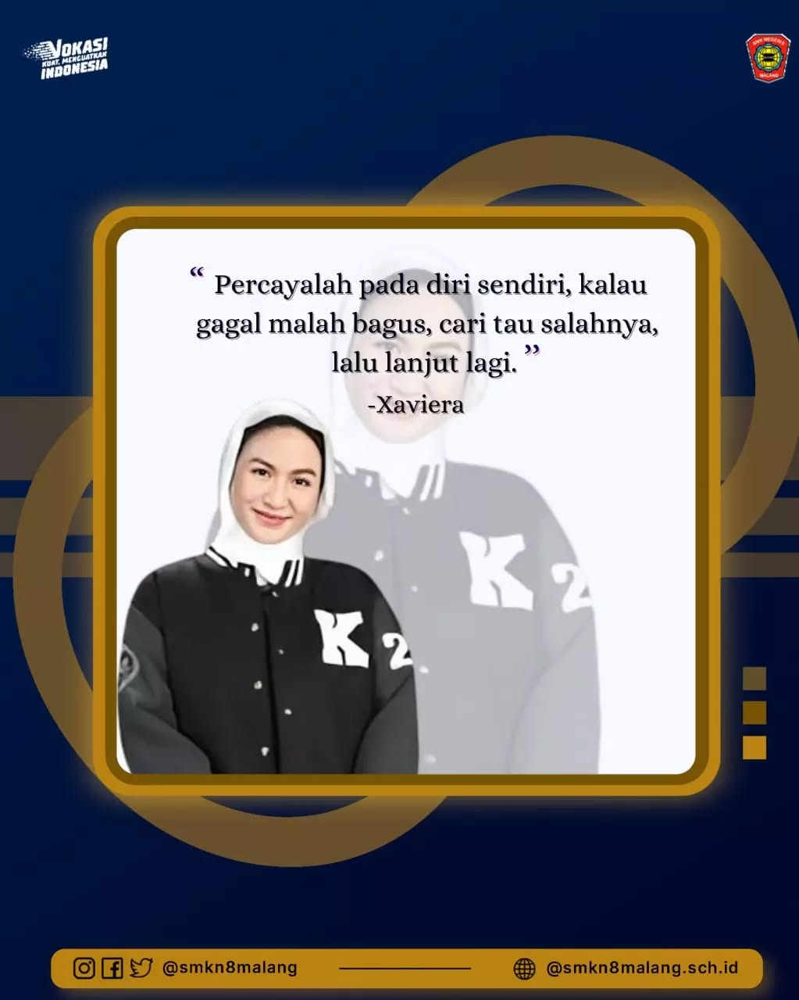
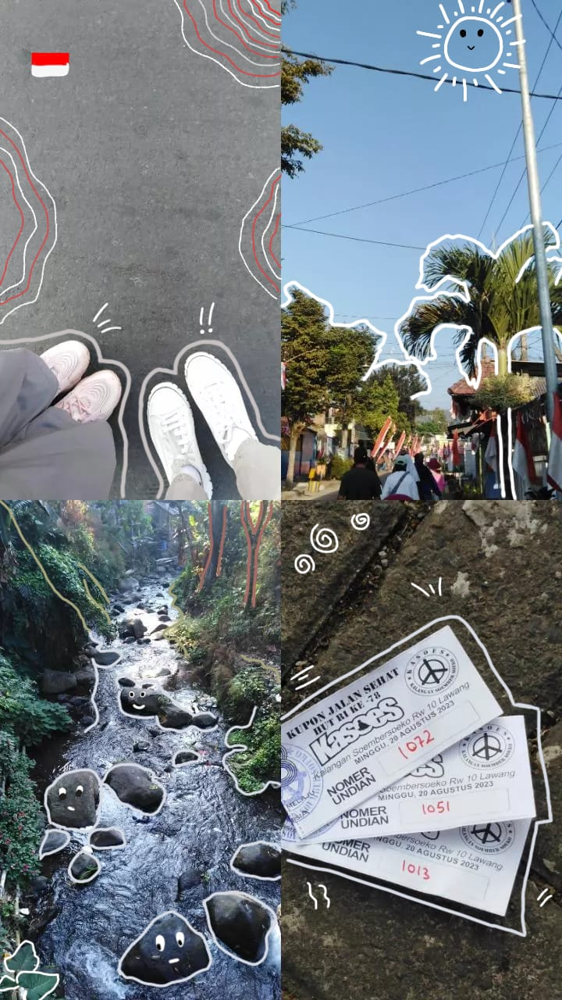
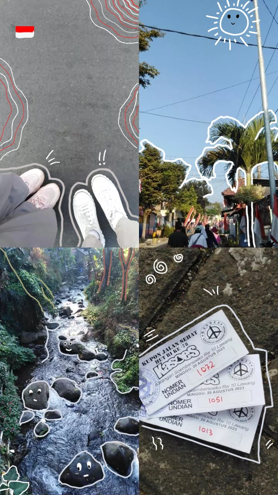
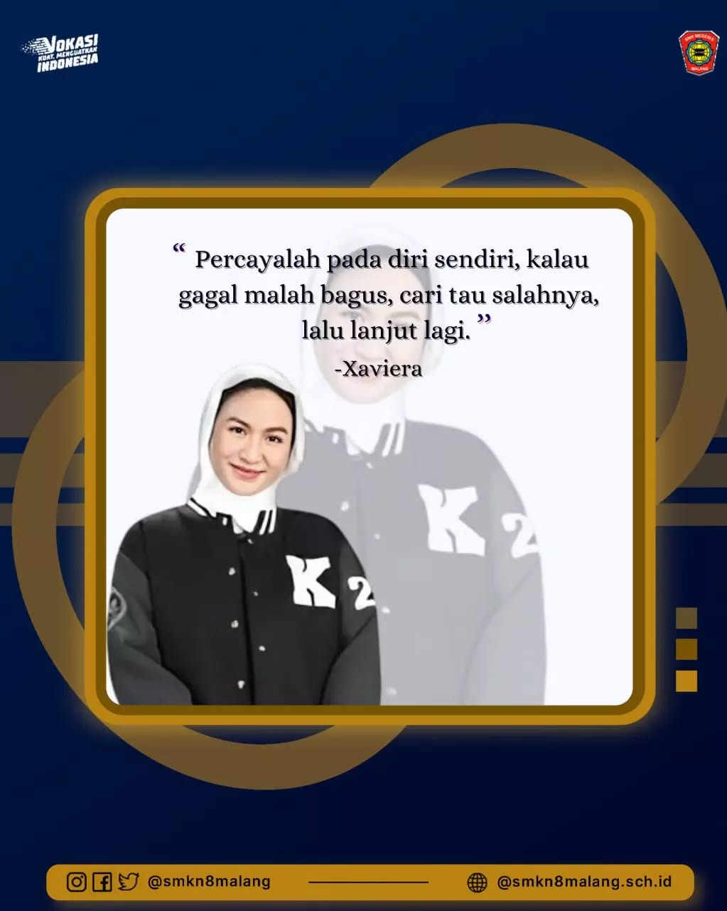
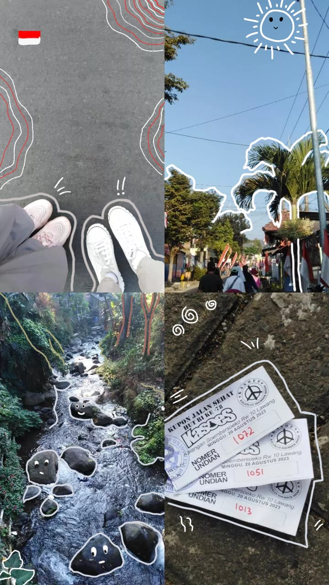

 



Haloo, Perkenalkan saya Maurin Rizki Maulidyah Rahmi, saya biasa dipanggil Maurin, saya tinggal di Kota Malang, saya seorang siswa pelajar jurusan RPL(Rekayasa Perangkat Lunak) di SMKN 8 Malang. Saya mempunyai minat dibidang Fotografi.
instagram: m.lyrnn
email: maurinrin16@gmail.com
Art
Fotografi
scribbel(corat coret foto)
Canva
Capcut
Ibispaint X
Membaca buku
Mendengarkan musik
Memasak

